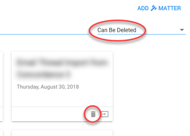

Click on a tile to open the matter.
To quickly find a matter, search on the matter name:

To Continue Review, select

Create Matter
If no matter is available, create one via
For more information, see Create Matter.
Delete Matter
Filter on matters that can be deleted (available when closed in Legal Processing more than 7 days ago).
Click on the Delete icon to delete the matter.
